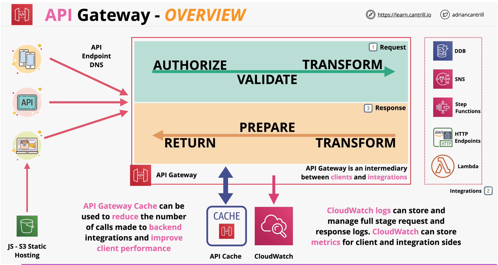
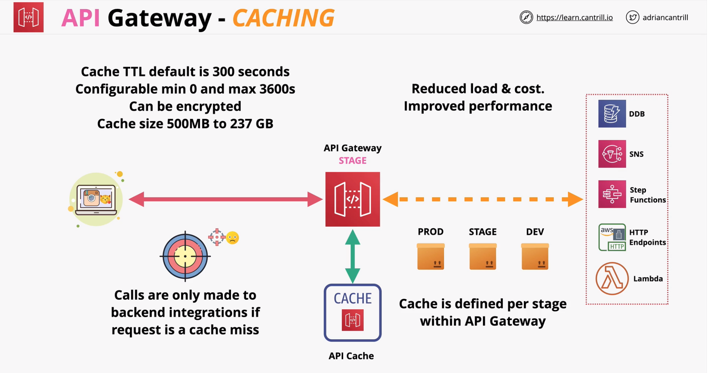
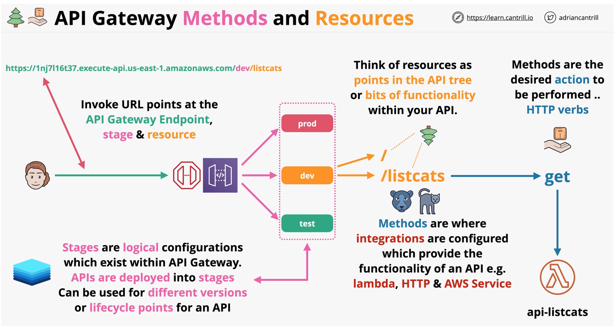
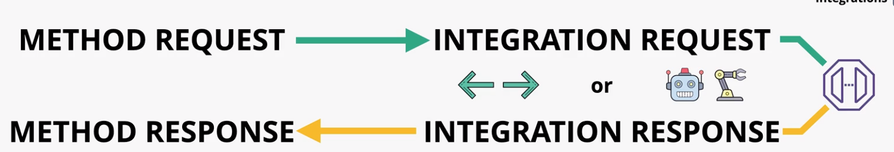
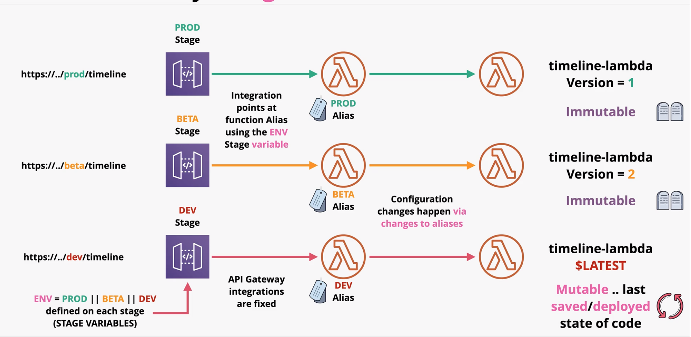

API Gateway
Overview
A fully managed service that makes it easy for developers to create, publish, maintain, monitor, and secure APIs at any scale
- Create and Manaage API
- Highly Available and Scalable
- Handles authorization, throttling, caching, CORS, transformations, OpenAPI spec
- Direct integrations with AWS services (dynamo, step-functions, SNS, lambda)
- Public services - both on-premise and AWS
- Supports creating HTTP APIs, REST APIs and Websocket APIs

Authentication

Endpoint Types
- Edge Optimized
- routed to the nearest cloudfront POP (point of presence)
- Regional
- clients in the same region
- Private
- endpoint accessible only withing a VPC via interface endpoint
Stages

Error Codes
- 4XX - Client Error - Invalid request on client side
- 5XX - Server Error - Valid request, backend issue
- API Gateway Timeout L imit - 29s
| HTTP Status Code | Error code | Retry |
|---|---|---|
| 400 | Bad Request Exception (generic) | No |
| 403 | Access Denied Exception | No |
| 404 | Not Found Exception | No |
| 409 | Conflict Exception | No |
| 429 | Limit Exceeded Exception | No |
| 429 | Too Many Requests Exception | Yes |
| 502 | Bad Gateway Exception, usually for an incompatible output returned from a Lambda proxy integration backend and occasionally for out-of-order invocations due to heavy loads. | Yes if idempotent |
| 503 | Service Unavailable Exception | Yes |
| 504 | Endpoint Request Timed-out Exception | Yes if idempotent |
Caching
Caching is done per stage.

Methods and Resources

Integrations
- API methods are integrated with a backend endpoint
- MOCK - test without backend
- HTTP - Backend http endpoint (configure both integration request and response)
- HTTP Proxy - pass through to integration unmodified and return to the client unmodified (backedn need to use supported format)
- AWS - allows an API expose AWS service actions
- AWS_PROXY (lambda) - low admin overhead lambda endpoint
- heavy lifting done by lambda instead of gateway
- Mapping Templates
- used for AWS and HTTP (non proxy) integrations
- modify or rename parameters
- modify the body or heaers of the request
- filtering - removing anything which is not needed
- uses Velocity Templae Language (VTL)
- Example - using mapping template to transform REST (gateway) to SOAP (backend)


Stages and Deployments
- Changes made in API gateway are not LIVE
- The current API state needs to be deployed to a stage
- Stages can be environments (PROD, DEV, TEST)
- or versions (v1, v2, v3) for breaking changes
- Each stage has its own configuration
- versions are immutable in gateway and can be overwritten using configuration

Swagger and OpenAPI
- OpenAPI (OAS) formally known as swagger
- Swagger = OpenAPI V2
- OpenAPI V3 is a more recent version
- API description format for REST API's
- Endpoints (
/listcats) and Operations (GET /listcats) - input and output parameters & Authentication methods
- non tech information - contact info, licencse, terms of use...
Import existing OpenAPI spec + update permissions on resource policy for lambda